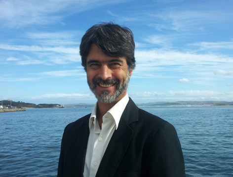
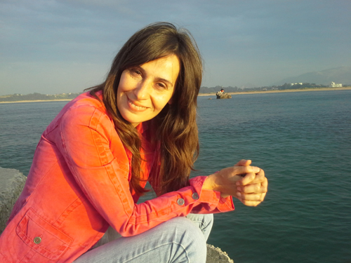

Ansiedad
Cuando el miedo o la tensión se vuelven constantes y condicionan el día a día.
- Ataques de pánico
- Fobias
- Estrés postraumático
Psicología clínica, terapia Gestalt y psicología transpersonal en Santander, en consulta y online.
Centro sanitario reconocido por la Consejería de Sanidad del Gobierno de Cantabria.
Entendemos a la persona como un sistema: cuerpo, mente, emociones, relaciones y conciencia. No tratamos síntomas aislados.
Más de 25 años de formación en habilidades de conciencia, que aplicamos en terapia para que aprendas a observar lo que te pasa.
Trabajamos la relación entre el intestino y el estado de ánimo, con pautas de alimentación y microbiota dentro del tratamiento.
Consulta presencial en Santander u online, para ti, tu pareja, tu familia o en grupo.
Un espacio a solas con tu terapeuta para trabajar lo que te preocupa, a tu ritmo.
Mejorar la comunicación y entender qué está pasando entre los dos.
Trabajar las relaciones familiares con todos sus miembros.
Compartir y aprender en compañía de otras personas, con acompañamiento profesional.
La misma consulta, desde donde estés.
Evaluación y tratamiento de las dificultades emocionales y de conducta.
Atención a la experiencia presente, al cuerpo y a las relaciones.
Incluye la dimensión espiritual y la conciencia en el proceso terapéutico.
Enfoque fundado por Jesús Mier.
Cuando el conflicto emocional sin resolver se expresa en el cuerpo.
Orientación para afrontar decisiones y etapas de cambio.
Cuando el miedo o la tensión se vuelven constantes y condicionan el día a día.
Acompañamiento cuando la tristeza o los cambios de humor pesan demasiado.
Trabajo sobre la forma de relacionarte contigo y con los demás.
Abordaje de las dependencias y de las conductas que se escapan de tu control.
Enfermedades físicas en las que el conflicto emocional sin resolver tiene un papel.
Herramientas para afrontar situaciones concretas y crecer personalmente.

Psicólogo clínico y transpersonal, colegiado M10007

Terapeuta Gestalt
Técnicas para soltar la tensión y descansar mejor.
Ver tallerEntrenamiento en mindfulness para vivir el presente.
Ver tallerUn espacio para entender y acompañar los ciclos femeninos.
Ver tallerGestión integral de la salud, paso a paso.
Ver tallerCurso de psicología transpersonal.
Ver cursoDepende. No existe un criterio único para saberlo: influyen el tipo de dificultad, la relación entre terapeuta y paciente, el compromiso personal y el enfoque terapéutico.
Cuando hay ataques de ansiedad, fobias, dificultades en las relaciones, problemas de sueño, un trauma sin resolver o simplemente ganas de crecer y manejar mejor lo que te pasa.
Al contrario. Aceptar que tienes una dificultad y pedir ayuda para resolverla es una señal de fortaleza.
Quien mantiene su bienestar físico, emocional, mental y relacional, y sabe manejar las situaciones de estrés.
Del conocimiento del ser humano: cómo funcionan sus procesos mentales y afectivos, el aprendizaje, la percepción, la motivación, las emociones y las relaciones personales.